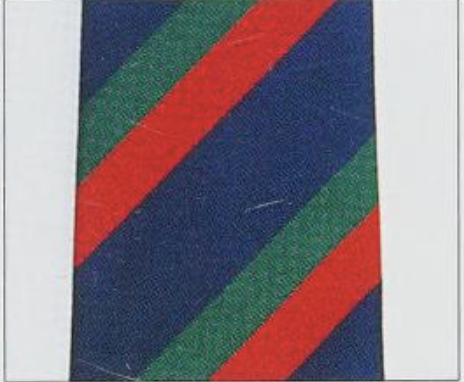
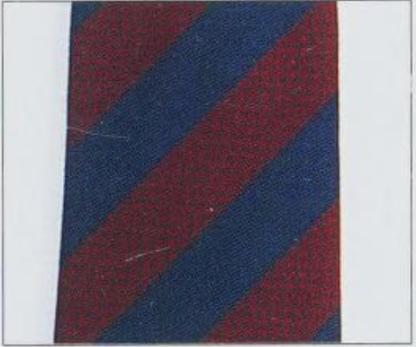
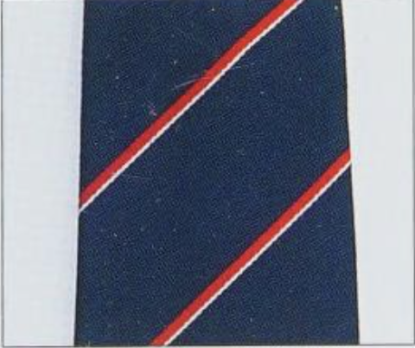
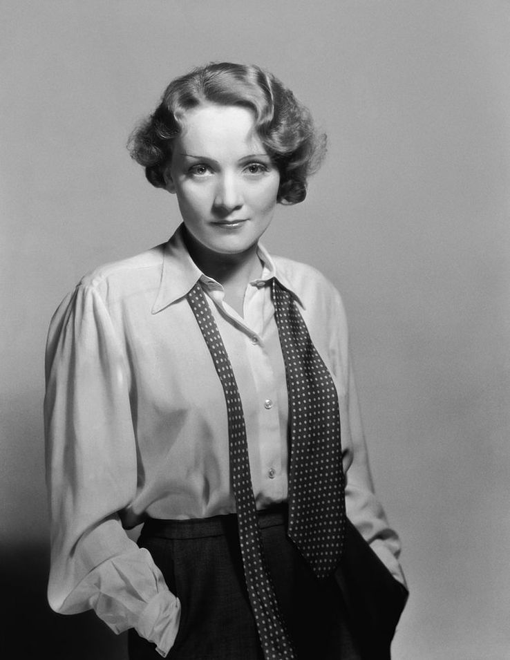

Consider că este necesară, cerută chiar, o încredere în sine conștientizată pentru femeile care poartă cravată. O femeie care știe să o poarte cu grație și să transmită în același timp un mesaj clar, definitoriu.
Originile cravatei sunt menționate pe Columna lui Traian , în Roma, ca cea mai timpurie dovadă înregistrată. Se zice că aceasta era purtată de către legionari, dar care se aseamănă foarte puțin cu ce cunoaștem noi astăzi. Primul prototip real este găsit în Europa secolului XVII, la curtea lui Ludovic al XIV-lea, inspirat de mercenarii croați (de unde și denumirea cravate, de la croate). Ulterior, odată cu apariția imprimeurilor și, în special al dungilor, cravata a devenit un simbol al unui statut social, cerc de elită sau club: Black Watch  , Life Guards  , Royal Navy  etc.
Mă fascinează cum a ajuns un accesoriu odată militar să devină un simbol al eleganței. Acum, printre politicieni și multitudinea de birouri de la o multinațională, prezența cravatei reprezintă putere și profesionalism. Nu pot să mă gândesc, totuși, că nu trebuie să ne lăsăm păcăliți de un nod bine făcut. Situația ultra mediatizată a întâlnirii dintre Donald Trump și Vladimir Zelensky în Biroul Oval îmi susține ideea perfect. Lipsa de respect și educația non existentă a sărit în ochi, împreună cu cravata roșie, prea lungă și costumul scump. În unele cazuri, o cravată se poate transforma dintr-o armură - într-o mască comică, chiar grotescă…
Pe de altă parte, pentru femeile din secolul XX, cravata se asocia cu un sentiment puternic de rebeliune și emancipare. Marlene Dietrich  , actrița germană care a început ca fiind cântăreață de cabaret, a folosit cravata ca mijloc de exprimare a personalității sale: un talent extrem de rafinat, având o batjocură de sine cu o sexualitate îndrăzneață și o inteligență insolentă. În era modernă, tabloidele au fost pline cu Julia Roberts la premiile Golden Globes din 1990 într-un costum bărbătesc oversized și o cravată cu imprimeu floral de bancher.
Cravata din garderoba mea este, de fapt, împrumutată fără gânduri de întoarcere de la tatăl meu, fost bancher de profesie. În dungi azurii și albastre închis cu gri, mai lată decât mi-am imaginat că mi-ar plăcea, aceasta reprezintă accesoriul masculin care mă provoacă să fiu creativă. Or, în zilele noastre, reinterpretarea este cheia pentru a pipera o ținută. Fie că preferați să o purtați în jurul taliei, ca o curea, la baza gâtului peste o cămașă albă din poplină, cu unul din 48 de noduri faimoase sau să o lăsați nelegată, știți sigur că ieșiți în evidență. Multitudinea de modele și stofe cu imprimeuri originale vă ajută să fiți unici, dacă nu vă temeți să încercați.
Pe lângă libertatea de exprimare pe care mi-o conferă cravata ca accesoriu în sine, cea a tatălui meu poartă cu ea o tentă nostalgică. Parcă mai miroase un pic a cafea, parcă o văd legănându-se, venind din depărtare, seara, după o zi de lucru. Prea mult spus moștenire, doar un martor al trecerii timpului…
-AE